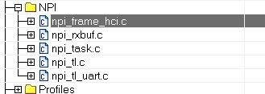
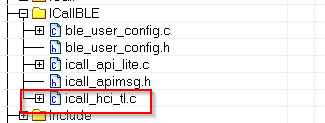
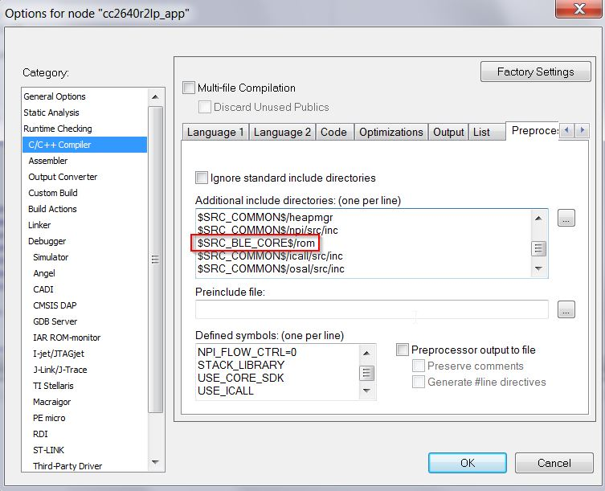

A system designer must have a firm grasp on the general system architecture, application, and Bluetooth low energy stack framework to implement a custom Bluetooth low energy application. This section provides indications and guidance on where and how to start implementing a custom application based on information presented in the previous sections (The Application and The Stack) as well as knowledge of TI RTOS and CC2640R2F.
Decide what role and purpose the custom application should have. If an application is tied to a specific service or profile, start with that sample application. An example is the heart rate sensor project, which implements the heart rate adopted profile. Otherwise, base your project on one of the following sample applications that implement one of the fundamental GAP roles:
- simple_central
- simple_peripheral
- simple_broadcaster
- simple_observer
Defining Application Behavior¶
The Sample Applications will often contain simple RTOS tasks with a barebones messaging system between tasks. For more information on how the application tasks works in general, review The Application.
To add drivers for other peripherals, see Drivers for more information.
Directed Advertisements as GATT Server¶
In BLE-Stack 3.01.00.05, Privacy is always enabled. Most of the privacy features are handled by the GAP bond manager in the stack. To conserve flash memory, by default, the GAP bond manager does not enable GATT client features. The implication of these disabled GATT client features is that the GAP bond manager will not query the Central Address Resolution characteristic of the remote device.
In order to perform a directed advertisement when the initiator’s address is set to Private Resolvable Address, the peripheral device must read the Central Address Resolution characteristic of its remote device to make sure address resolution is supported. Failure to do so before sending directed advertisements violates the Bluetooth Core Specification Version 4.2.
If you require the use of directed advertisements, you can add this
functionality by commenting out the #define GBM_GATT_NO_CLIENT
preprocessor option in gapbondmgr.c as shown below:
/* * When GATT_NO_CLIENT is used, the use of GATT Client API is compiled out under * GBM_GATT_NO_CLIENT. This means that, in the context of Privacy 1.2, the Bond * Manager of this device will not read the Central Address Resolution * Characteristic of the remote device. If it is desired that this device uses * a Private Resolvable Address for Directed Advertisements, comment out the * pre-processor logic below. */ #ifdef GATT_NO_CLIENT #ifndef GBM_GATT_NO_CLIENT #define GBM_GATT_NO_CLIENT #endif // !GBM_GATT_NO_CLIENT #endif // GATT_NO_CLIENT
Compiler Options¶
Preprocessor options (IAR) or Predefined symbols (CCS) configure system behavior, features, and resource usage at compile time. Some symbols are required as part of the Bluetooth low energy system, while others are configurable. See Accessing Preprocessor Symbols (CCS) or Accessing Preprocessor Symbols (IAR) for details on accessing preprocessor symbols. Symbols defined in a particular project are defined in all files within the project.
Modifying¶
To disable a symbol, put an x in front of the name. To disable
power management, change POWER_SAVING to xPOWER_SAVING.
Options¶
Table 13. lists the preprocessor symbols used by the application in the simple_peripheral project. Symbols that must remain unmodified are marked with an N in the Modify column while symbols that may be modified are marked with a Y.
| Modify | Preprocessor Symbol | Description |
|---|---|---|
| Y | BOARD_DISPLAY_USE_LCD | 0 or 1 determines if the Display driver should use LCD |
| Y | BOARD_DISPLAY_USE_UART | 0 or 1 determines if the Display driver should use UART |
| Y | BOARD_DISPLAY_USE_UART_ANSI | 0 or 1 determines if the Display driver should use UART ANSI |
| N | CC26XX | This selects the chipset |
| N | CC26XX_R2 | This selects the chipset |
| N | DeviceFamily_CC26X0R2 | This selects the chipset |
| N | ICALL_EVENTS | Configures ICall to use Events |
| N | ICALL_JT | Configures ICall to use the jumptable |
| N | ICALL_LITE | Configures ICall to use the jumptable |
| N | STACK_LIBRARY | During build, only includes the correct files for the stack library configuration |
| N | USE_ICALL | Required to use ICall Bluetooth low energy and primitive services |
| Y | TBM_ACTIVE_ITEMS_ONLY | When using the Two Button Menu, Only active items will be displayed |
| N | RF_SINGLEMODE | Used for core radio configuration |
| Y | POWER_SAVING | Power management is enabled when defined, and disabled when not defined. Requires same option in stack project |
| Y | ICALL_MAX_NUM_TASKS | Defines the number of ICall aware tasks. Modify only if adding a new TI-RTOS task that uses ICall services |
| Y | ICALL_MAX_NUM_ENTITIES | Defines maximum number of entities that use ICall, including service entities and application entities. Modify only if adding a new TI-RTOS task that uses ICall services |
| N | ICALL_STACK0_ADDR | Stack entry address (flash) |
| Y | Display_DISABLE_ALL | All Display statements are removed and no display operations will take place. See Display.h for more details found in the Drivers virtual folder in the project |
| Y | MAX_NUM_BLE_CONNS | This is the maximum number of simultaneous Bluetooth low energy collections allowed. Adding more connections uses more RAM and may require increasing HEAPMGR_SIZE. Profile heap usage accordingly |
| N | <board_type> |
In SimpleLink CC2640R2 SDK, only CC2640R2_LAUNCHXL is supported by default |
| N | xdc_runtime_Assert | Disables XDC run-time assert xdc_runtime_Assert_DISABLE_ALL |
| N | xdc_runtime_Log | Disables XDC run-time logging xdc_runtime_Log_DISABLE_ALL |
| Y | HEAPMGR_METRICS | Enables collection of ICall heap metrics. See Dynamic Memory Allocation for details on how to profile heap usage |
Table 14. lists the only stack preprocessor options. Symbols that must remain unmodified are marked with an N in the Modify column while symbols that may be modified are marked with a Y.
| Modify | Preprocessor Symbol | Description |
|---|---|---|
| N | CC26XX | This selects the chipset |
| N | CC26XX_R2 | This selects the chipset |
| N | DeviceFamily_CC26X0R2 | This selects the chipset |
| N | FLASH_ROM_BUILD | Allows tools to correctly pull in libraries and applicable jump table configuration for ICall |
| Y | GATT_NO_CLIENT | When defined, the GATT client is not included to save flash. GATT client is excluded from most peripheral projects, included in central and certain peripheral projects (for example, TimeApp) |
| Y | NO_BLE_SECURITY | Unlink security functions from the dispatcher, used in conjunction with disabling GAP bond manager and SNV to further reduce flash space. |
| N | ICALL_EVENTS | Configures ICall to use Events |
| N | ICALL_JT | Configures ICall to use the jumptable |
| N | ICALL_LITE | Configures ICall to correctly use the jumptable |
| N | OSAL_CBTIMER_NUM_TASKS=1 | Configures the stack for BLE Operation |
| N | STACK_LIBRARY | During build, only includes the correct files for the stack library configuration |
| N | USE_ICALL | Required to use ICall Bluetooth low energy and primitive services |
| N | RF_SINGLEMODE | Used for core radio configuration |
| Y | POWER_SAVING | Power management is enabled when defined, and disabled when not defined. Requires the same option in application project |
| Y | OSAL_SNV=1 | Select the number of NV pages to use for SNV. Each page is 4kB of flash. A minimum of one page is required when GAP_BOND_MANAGER is defined. See Using Simple NV for Flash Storage |
| Y | OSAL_MAX_NUM_PROXY_TASKS | Number of ICall-aware tasks the protocol task can communicate with. Default is 2. Increase this value if more TI-RTOS tasks are added that make ICall protocol stack API calls |
| Y | EXT_HAL_ASSERT | Extended assert enables support for application callback for asserts |
Creating Additional ICall Enabled Tasks¶
The objective of this section is to familiarize the programmer with the process of adding an RTOS task that can communicate with the BLE-Stack. Tasks call functions within the BLE-Stack must follow a few additional steps to register with ICall. These details are covered below:
1. Follow all the steps detailed in Tasks to create a TI-RTOS task.
- Modify the task’s init function to register with ICall (explained in ICall Initialization and Registration)
- Modify the task’s main function to pend on
syncEvent(explained in ICall Thread Synchronization)
- Modify number of ICall enabled tasks:
- Increase the following preprocessor defines:
- ICALL_MAX_NUM_TASKS (App)
- OSAL_MAX_NUM_PROXY_TASKS (Stack)
- See Accessing Preprocessor Symbols (CCS) and Accessing Preprocessor Symbols (IAR) for steps on how to change symbols
Warning
If OSAL_MAX_NUM_PROXY_TASKS and ICALL_MAX_NUM_TASKS do not match, the stack will abort.
- Modify number of ICall entities:
- Increase the following preprocessor defines:
- ICALL_MAX_NUM_ENTITIES (App)
For further description of the above preprocessor defines, please see Table 16.
Using Production Test Mode (PTM)¶
As described in Host Controller Interface (HCI), PTM is a way pass HCI commands from an external communication protocol to the controller of the BLE-Stack.
A framework called Network Processor Interface (NPI) will be used to facilitate communicate between the Transport Protocol (UART or SPI), the embedded application, and the BLE-Stack.
Note
For more information on NPI see NPI Wiki
To enable production test mode and send HCI status back via external transport protocol, the application must:
- Add NPI Functionality to Application Project
- Configure NPI to Receive Commands From Transport Protocol
- Send HCI Commands Using ICall Direct API
- Explicitly Enable PTM and Configure HCI Transport Layer
- Configure NPI to Forward Responses to Transport Protocol
This section will be an example of how to implement PTM on the simple_peripheral project using UART as the transfer protocol.
For the resulting changes to simple_peripheral as a patch, see PTM Changes for Simple Peripheral Example.
Note
Back Channel UART Port of the XDS110 will be where HCI commands can be sent from a BLE HCI tester.
Add NPI to Application Project¶
Network Processor Interface (NPI) is utilized to move HCI commands from the various entities in the embedded application.
For this example, to add NPI functionality to simple peripheral, include the following files in the project. In this example, these files are placed into a NPI folder so they are compiled.
Note
These files can also be copied into the application project workspace instead of linking; this will prevent modification of SDK provided code.
Include paths should be added as appropriate to point to the copied files in the workspace.
<SDK>\source\ti\blestack\npi\src\npi_frame_hci.c <SDK>\source\ti\blestack\npi\src\npi_rxbuf.c <SDK>\source\ti\blestack\npi\src\npi_task.c <SDK>\source\ti\blestack\npi\src\npi_tl.c <SDK>\source\ti\blestack\npi\src\npi_tl_uart.cFigure 69. NPI Folder Shown in IAR
{kind=link}
Then add the NPI include directory to the include search path for the
IDE. This path is located at <SDK>\source\ti\blestack\npi\src. This
allows all the NPI header files to be found by the compiler.
Note
IAR will automatically include files in workspace, so adding<SDK>\source\ti\blestack\npi\srcisn’t necessary. Re-including this path does not cause issues.
{kind=link}
Figure 70. Include Directories in IAR
Once the files in place, we want include the NPI Task into our project.
For this example, add npi_task.h to main.c and add
NPITask_createTask(ICALL_SERVICE_CLASS_BLE); to main().
#include "peripheral.h" #include "simple_peripehral.h" #include "npi_task.h" //... int main() { //... /* Start tasks of external images - Priority 5 */ ICall_createRemoteTasks(); /* Start task for NPI task */ NPITask_createTask(ICALL_SERVICE_CLASS_BLE); //... }
Next, we need to set the proper priority for the task, ideally it should be lower than the stack task, but higher than the GAP task. This allows commands to interrupt tasks if required.
For this example, the priority of 4 worked perfectly. The priority of the
NPI task is set within the npi_task.c file:
//! \brief Task priority for NPI RTOS task #define NPITASK_PRIORITY 4
Then, we need to account for another ICall enabled task. This is required or runtime issues will result. As noted in Bluetooth Low Energy Stack Configuration Parameters, modifications to ICALL_MAX_NUM_TASKS (App) and OSAL_MAX_NUM_PROXY_TASKS (Stack) are required. For information on how to add ICall Aware Tasks, and information on the modifications made to the Application and Stack Projects see Creating Additional ICall Enabled Tasks.
For this example, assign the value of 4 to both these in the preprocessor defines:
... ICALL_LITE ICALL_MAX_NUM_ENTITIES=6 ICALL_MAX_NUM_TASKS=4 MAX_NUM_BLE_CONNS=1 POWER_SAVING ...... ICALL_LITE OSAL_MAX_NUM_PROXY_TASKS=4 OSAL_CBTIMER_NUM_TASKS=1 ...Note
The stack must be rebuilt for changes to take effect. Always build the stack first, and then the application to ensure the stack will support the PTM commands.
Configure NPI to Receive Commands from Transport Protocol¶
A transport protocol is used to transfer commands and status between a BLE HCI Tester and the application. Implementing a transfer protocol involves configuring TI Drivers correctly with board files. NPI currently supports SPI and UART protocols.
For information on setting up a TI Driver for UART see Drivers, and Package Type and Board Files.
For this example, we want to use UART as our transport protocol
for NPI. Defining the NPI_USE_UART in the preprocessor defines
of the application project produces this effect.
... POWER_SAVING NPI_USE_UART STACK_LIBRARY ...
NPI will attempt to open the first UART or SPI interface defined by
Board_UART0 or Board_SPI0 when attempting to initialize
it’s transport layer. (npi_tl_uart.c or npi_tl_spi.c)
NPI by default utilizes a handshake/flow control system to signal when a slave is ready to transmit/receive and when a master is ready to transmit/receive. In general, for testing purposes, this functionality isn’t needed and should be disabled.
In this example, to disable flow control, add the following preprocessor define to the application project:
... POWER_SAVING NPI_USE_UART NPI_FLOW_CTRL=0 STACK_LIBRARY ...
At this point, when HCI commands are sent to the back channel UART,
NPI will receive the command and is able to begin processing of the
message in NPITask_processRXQ. However, when a message is sent
to the stack, ICall will abort execution.
Sending HCI Commands Using ICall Direct API¶
Default functionality of NPI is to send a received NPI Frame to both the BLE-Stack and the Application. This behavior is not desired due to the enhanced ICall architecture. Instead, the embedded application must intercept the NPI Frame and send the message to the BLE-Stack through enhanced ICall’s direct message API instead.
Danger
If ICall’s direct message API isn’t used when communicating with the BLE-Stack, ICall will abort program execution.
To configure NPI to only send messages to the embedded
application, the NPITask_registerIncomingRXEventAppCB function is
utilized to tell NPI to INTERCEPT messages and send them to a function
which will then utilize ICall Direct API.
ICall Direct API for any given HCI command can be translated from
an NPI frame via HCI_TL_SendToStack, defined by the ICall HCI Transport
Layer (icall_hci_tl.c), into a Direct API expected by the BLE-Stack.
In this example, the request to intercept NPI events is done within
simple_peripheral.c at the end of the SimpleBLEPeripheral_init function:
//... #include "board.h" #include "simple_peripheral.h" #include "npi_task.h" // To Allow RX Event Registration //... static void SimpleBLEPeripheral_init(void) { //... // Intercept NPI RX events. NPITask_registerIncomingRXEventAppCB(SBP_handleNPIRxInterceptEvent, INTERCEPT); }
Also, SBP_handleNPIRxInterceptEvent needs to be defined such that
the NPI message gets sent to the stack via ICall Direct API:
#include "npi_task.h" // To Allow RX Event Registration #include "icall_hci_tl.h" // To allow ICall HCI Transport Layer //... void SBP_handleNPIRxInterceptEvent(uint8_t *pMsg); // Declaration //... /********************************************************************* * @fn SBP_handleNPIRxInterceptEvent * * @brief Intercept an NPI RX serial message and queue for this application. * * @param pMsg - a NPIMSG_msg_t containing the intercepted message. * * @return none. */ void SBP_handleNPIRxInterceptEvent(uint8_t *pMsg) { // Send Command via HCI TL HCI_TL_SendToStack(((NPIMSG_msg_t *)pMsg)->pBuf); // The data is stored as a message, free this first. ICall_freeMsg(((NPIMSG_msg_t *)pMsg)->pBuf); // Free container. ICall_free(pMsg); }
Lastly, the ICall HCI Transport layer needs to be built, add icall_hci_tl.c from
<SDK>\examples\rtos\CC2640R2_LAUNCHXL\blestack\icall\app to the build.
In this example, icall_hci_tl.c is added to the ICallBLE folder.
Figure 71. Adding file to ICallBLE Folder in IAR
{kind=link}
ICall HCI Transport Layer also requires access to ROM jumptable header file (rom_jt.h).
Add <SDK>\source\ti\blestack\rom to the includes search path of the compiler.
Figure 72. Include Directories in IAR
Note
The ROM directory may already be included by simple_peripehral in the CCS project; re-including the path does not cause issues.
{kind=link}
Explicitly Enable PTM and Configure HCI Transport Layer¶
The HCI Transport Layer needs to be configured to use the correct jump table on both the application and stack sides of the project.
On the stack side, the transport layer capabilities is defined in the
build_config.opt file under the Tools folder. By default no
transport layer is included on the stack side to save flash.
In this example, the following modification in build_config.opt
to enable PTM commands:
/* Include Transport Layer (Full or PTM) */ /* -DHCI_TL_NONE Comment this line */ -DHCI_TL_PTM /* -DHCI_TL_FULL */
The transport layer now usable, the stack must be initialized to begin processing HCI commands correctly. The stack can be notified to enter PTM via the HCI_EXT_EnablePTMCmd() Vendor Specific HCI Command.
In this example, we go straight into PTM code at the end of the initialization function of simple_peripheral.
static void SimpleBLEPeripheral_init(void) { //... // Intercept NPI RX events. NPITask_registerIncomingRXEventAppCB(SBP_handleNPIRxInterceptEvent, INTERCEPT); // Inform Stack to Initialize PTM HCI_EXT_EnablePTMCmd(); }
Note
When PTM is enabled, a HCI_ResetCmd() is issued, reseting the controller and various parts of the stack.
PTM should be configured such that it’s only enabled if a particular set of GPIOs or other signals are in a particular state. Else the regular application should run.
This example is simply to demonstrate PTM on a SimpleLink CC2640R2 SDK Project.
Configure NPI to Forward Responses to Transport Protocol¶
Finally, events and status of commands should be sent back to the transport protocol. This is done by registering callback functions with the transport layer which forward the messages to NPI. Once NPI has the messages, it then will send the message to the transport protocol configured.
In this example, the following needs to be added to the simple_peripheral.c to enable transmission of messages to UART:
//... #include "npi_task.h" #include "npi_ble.h" #include "icall_hci_tl.h" //... void SBP_handleNPIRxInterceptEvent(uint8_t *pMsg); // Declaration static void SBP_sendToNPI(uint8_t *buf, uint16_t len); // Declaration //... static void SimpleBLEPeripheral_init(void) { //... // Intercept NPI RX events. NPITask_registerIncomingRXEventAppCB(SBP_handleNPIRxInterceptEvent, INTERCEPT); // Register for Command Status information HCI_TL_Init(NULL, (HCI_TL_CommandStatusCB_t) SBP_sendToNPI, selfEntity); // Register for Events HCI_TL_getCmdResponderID(ICall_getLocalMsgEntityId(ICALL_SERVICE_CLASS_BLE_MSG, selfEntity)); // Inform Stack to Initialize PTM HCI_EXT_EnablePTMCmd(); } //... static uint8_t SimpleBLEPeripheral_processStackMsg(ICall_Hdr *pMsg) { //... switch (pMsg->event) { //... } // Check for NPI Messages hciPacket_t *pBuf = (hciPacket_t *)pMsg; // Serialized HCI Event if (pBuf->hdr.event == HCI_CTRL_TO_HOST_EVENT) { uint16_t len = 0; // Determine the packet length switch(pBuf->pData[0]) { case HCI_EVENT_PACKET: len = HCI_EVENT_MIN_LENGTH + pBuf->pData[2]; break; case HCI_ACL_DATA_PACKET: len = HCI_DATA_MIN_LENGTH + BUILD_UINT16(pBuf->pData[3], pBuf->pData[4]); break; default: break; } // Send to Remote Host. SBP_sendToNPI(pBuf->pData, len); // Free buffers if needed. switch (pBuf->pData[0]) { case HCI_ACL_DATA_PACKET: case HCI_SCO_DATA_PACKET: BM_free(pBuf->pData); default: break; } } return (safeToDealloc); } //... /********************************************************************* * @fn SBP_sendToNPI * * @brief Create an NPI packet and send to NPI to transmit. * * @param buf - pointer HCI event or data. * * @param len - length of buf in bytes. * * @return none */ static void SBP_sendToNPI(uint8_t *buf, uint16_t len) { npiPkt_t *pNpiPkt = (npiPkt_t *)ICall_allocMsg(sizeof(npiPkt_t) + len); if (pNpiPkt) { pNpiPkt->hdr.event = buf[0]; //Has the event status code in first byte of payload pNpiPkt->hdr.status = 0xFF; pNpiPkt->pktLen = len; pNpiPkt->pData = (uint8 *)(pNpiPkt + 1); memcpy(pNpiPkt->pData, buf, len); // Send to NPI // Note: there is no need to free this packet. NPI will do that itself. NPITask_sendToHost((uint8_t *)pNpiPkt); } }
At this point, simple_peripheral now in PTM mode upon reset. As noted earlier, a mechanism to enable PTM when desired should be implemented. In other words the following functions can be called when PTM is desired by the developer:
if(PTM_ENABLE_FLAG) { // Intercept NPI RX events. NPITask_registerIncomingRXEventAppCB(SBP_handleNPIRxInterceptEvent, INTERCEPT); // Register for Command Status information HCI_TL_Init(NULL, (HCI_TL_CommandStatusCB_t) SBP_sendToNPI, selfEntity); // Register for Events HCI_TL_getCmdResponderID(ICall_getLocalMsgEntityId(ICALL_SERVICE_CLASS_BLE_MSG, selfEntity)); // Inform Stack to Initialize PTM HCI_EXT_EnablePTMCmd(); }
Where PTM_ENABLE_FLAG is set to a value when specific conditions are met, such as
GPIO toggled during start up.
PTM Changes for Simple Peripheral Example¶
The changes outlined in this section applied to simple_peripheral can be downloaded
resources/ptm-simple-peripheral.zip. The patch contains all required
project and code changes to enable PTM.
Note
Always build the stack first, then the application to ensure the stack will support the PTM commands.
Optimizing Bluetooth low energy Stack Memory Usage¶
Configuration of the Bluetooth low energy protocol stack is essential for maximizing the amount of RAM and flash memory available for the application. Refer to Stack Configurations to configure parameters that impact runtime RAM usage, such as the maximum allowable size and number of PDUs. The TI Bluetooth low energy protocol stack is implemented to use a small RAM footprint, and allow the application to control the behavior of the stack by using the runtime ICall heap. For example, an application that only sends one GATT notification per connection event must store only one PDU in the heap, whereas as an application that must send multiple notifications must enqueue multiple PDUs in the heap.
To increase the available flash memory allocated to the application project, minimize the flash usage of the protocol stack by including only Bluetooth low energy features required to implement the defined role of the device. The available protocol stack configurable features are described in Stack Configurations. Adding additional features to the protocol stack has the net effect of reducing the amount of flash memory to the application.
Additional Memory Configuration Options¶
The following tips can be used to minimize RAM and flash usage by the protocol stack:
- Verify that your application uses the optimize for flash size compiler optimization settings (default for TI projects).
- Use only one page of SNV or do not use any NV pages if the GAP bond manager is not required. Set the
NO_OSAL_SNVstack preprocessor option. See Using Simple NV for Flash Storage for a description of SNV.- Exclude the GATT client functionality by defining the
GATT_NO_CLIENTpredefined symbol in the stack project for peripheral devices. (Peripheral devices do not typically implement the GATT client role.)- Remove or exclude debug DISPLAY drivers from the application project (see Dynamic Allocation Errors).
- Exclude Bluetooth low energy features from the Bluetooth low energy stack that are not used.
See Check System Flash and RAM Usage With Map File for the procedure to check the size of the configured protocol stack.
Defining Bluetooth Low Energy Behavior¶
This step involves using Bluetooth low energy protocol stack APIs to define the system behavior and adding profiles, defining the GATT database, configuring the security model, and so forth. Use the concepts explained in The Stack as well as the Bluetooth low energy API reference in BLE Stack API Reference.